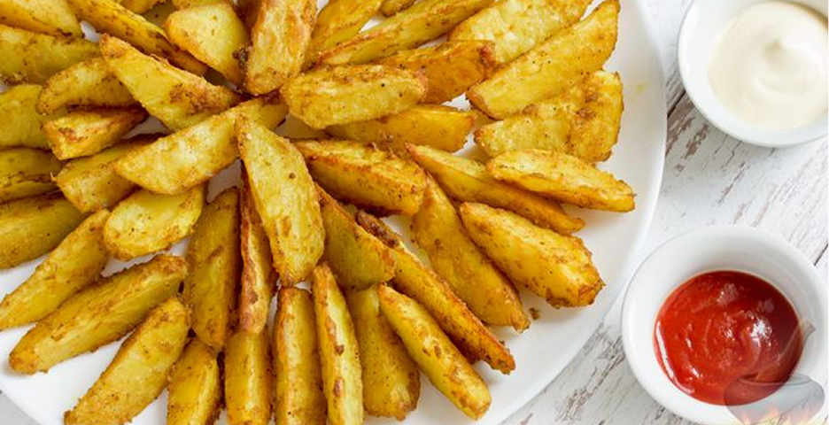
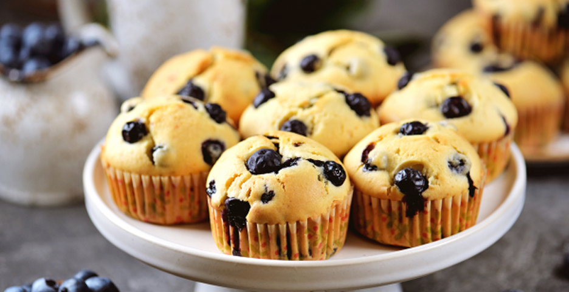

Новые рецепты
|
 |
Картофель по-деревенски Ломтики картофеля, запечённые в духовке по этому рецепту, получаются мягкими внутри и имеют тонкую хрустящую корочку с пряным вкусом и ароматом. Картофель по-деревенски станет замечательным гарниром к мясу или рыбе, а также может быть подан как самостоятельное блюдо с различными соусами! Продукты: картофель, масло подсолнечное, паприка молотая, куркума молотая, кориандр, порошок чесночный, горчица, соль, перец чёрный молотый |
|
 |
Маффины с черникой Эти маффины не сдобные. В тесто добавляется только одно яйцо и пару ложек растительного масла. Но черника, как всегда, облагораживает любую выпечку. Продукты: Пахта или кислое молоко, черника, мука, разрыхлитель, сахар, ванильный экстракт, яйцо, масло растительное, сахар для присыпки |